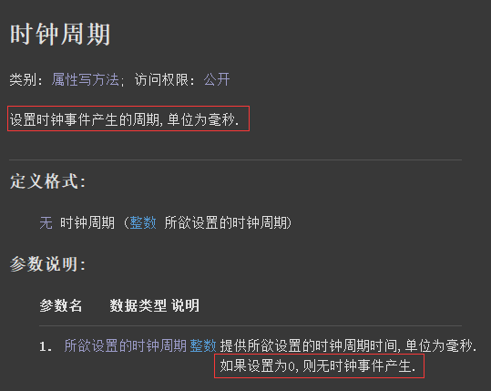
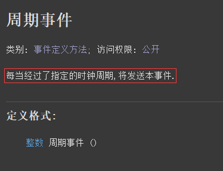
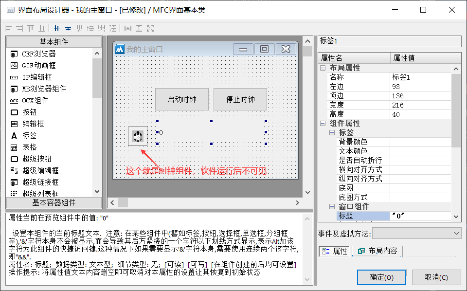
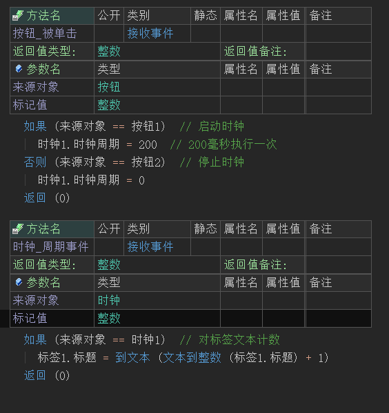
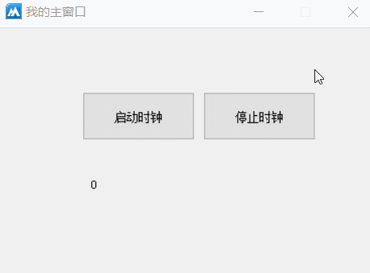

作者：创世魂
● 概述
本组件是一个不可视的功能类组件，主要用于定时操作。
● 时钟周期(写)
“时钟周期”帮助文档如下图：
本属性用于设置当前时钟周期时间，单位为毫秒。
本属性只要不为0，只要经过了设置的时间就会触发“周期事件”。

“周期事件”帮助文档如下图：
当“时钟周期”属性不为0时，只要经过了设置的时间就会触发本事件。

界面设计如下图：
因为时钟组件是不可视组件所以在拖动组件时不用考虑组件尺寸的问题，任意大小都可以，软件运行后并不会显示此组件。

代码编写如下图：
1、按钮1点击后设置时钟周期为200毫秒执行一次。
2、按钮2点击设置时钟周期为0来停止时钟。
3、添加“时钟周期”事件，判断来源后对标签文本进行计数操作。

运行效果如下图：
最终在不同按钮的点击下，标签文本呈现不同的状态，证明时钟正常执行。
